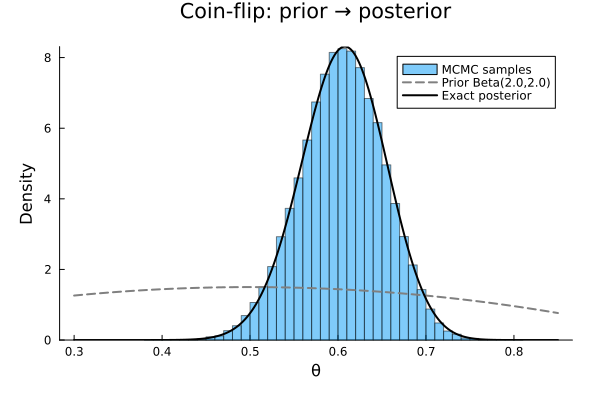

Bayesian Inference: Coin Flip with Importance Sampling
We demonstrate importance sampling via Metropolis: proposals from a random walk, acceptance based on the posterior ratio (prior × likelihood). This pattern is general and directly compatible with advanced algorithms in MonteCarloX.jl such as multicanonical and Wang-Landau sampling.
using Random, Statistics, Distributions, Plots
using MonteCarloXCI parameters
const CI_MODE = get(ENV, "MCX_SMOKE", get(ENV, "MCX_CI", "false")) == "true"
n_steps = CI_MODE ? 1_000 : 100_000
burn_in = CI_MODE ? 200 : 10_00010000Data and model
We observe 100 coin flips with 61 heads and 39 tails. The conjugate prior is $\text{Beta}(2,2)$, giving an exact posterior $\text{Beta}(\alpha + \text{heads},\, \beta + \text{tails})$ against which we validate the MCMC result.
A key advantage of MCMC is that accept! only needs the unnormalized log-posterior — prior plus likelihood — without computing the evidence.
n_heads, n_tails = 61, 39
α_prior, β_prior = 2.0, 2.0
prior = Beta(α_prior, β_prior)
posterior_exact = Beta(α_prior + n_heads, β_prior + n_tails)
logprior(θ) = logpdf(prior, θ)
loglikelihood(θ) = n_heads * log(θ) + n_tails * log1p(-θ)
logposterior(θ) = logprior(θ) + loglikelihood(θ)
println("Data : $(n_heads) heads, $(n_tails) tails out of $(n_heads+n_tails)")
println("Exact posterior : Beta($(α_prior + n_heads), $(β_prior + n_tails))")Data : 61 heads, 39 tails out of 100
Exact posterior : Beta(63.0, 41.0)Metropolis sampling
A Gaussian random walk proposes new values of $\theta \in (0,1)$. The accept! interface of MonteCarloX.jl evaluates the log-posterior ratio and handles the acceptance decision, tracking statistics automatically.
function update!(alg::Metropolis, θ, Δ)
θ_new = θ + Δ * randn(alg.rng)
if 0.0 < θ_new < 1.0
accept!(alg, θ_new, θ) && (θ = θ_new)
end
return θ
end
function run_metropolis(logposterior, prior; seed=2026, Δ=0.03)
rng = MersenneTwister(seed)
alg = Metropolis(rng, logposterior)
θ = rand(rng, prior)
samples = Float64[]
for _ in 1:burn_in
θ = update!(alg, θ, Δ)
end
reset!(alg)
for _ in 1:n_steps
θ = update!(alg, θ, Δ)
push!(samples, θ)
end
return samples, alg
end
samples, alg = run_metropolis(logposterior, prior)
println("Step size Δ : 0.03")
println("Acceptance rate : ", round(acceptance_rate(alg); digits=3))
println("Samples collected : ", length(samples))Step size Δ : 0.03
Acceptance rate : 0.808
Samples collected : 100000Results
The MCMC posterior mean and 95% credible interval match the exact Beta posterior closely, confirming correct implementation. The plot shows the Bayesian update from prior to posterior, with the MCMC histogram overlaid.
println("Posterior mean: MCMC = ", round(mean(samples); digits=4),
" exact = ", round(mean(posterior_exact); digits=4))
println("95% CI: MCMC = [", round(quantile(samples, 0.025); digits=4),
", ", round(quantile(samples, 0.975); digits=4), "]")
println(" exact = [", round(quantile(posterior_exact, 0.025); digits=4),
", ", round(quantile(posterior_exact, 0.975); digits=4), "]")
xgrid = range(0.3, 0.85; length=300)
histogram(samples; bins=50, normalize=:pdf, alpha=0.5,
label="MCMC samples", xlabel="θ", ylabel="Density",
title="Coin-flip: prior → posterior")
plot!(xgrid, pdf.(prior, xgrid);
lw=2, color=:gray, ls=:dash, label="Prior Beta($(α_prior),$(β_prior))")
plot!(xgrid, pdf.(posterior_exact, xgrid);
lw=2, color=:black, label="Exact posterior")
This page was generated using Literate.jl.